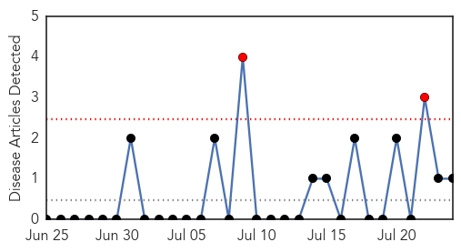
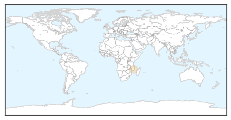
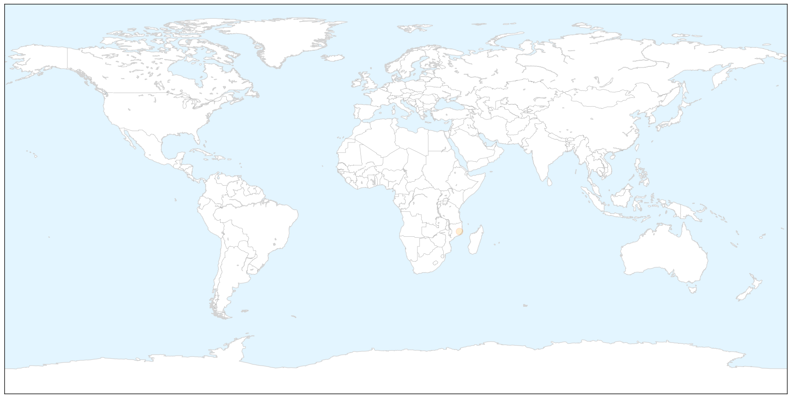
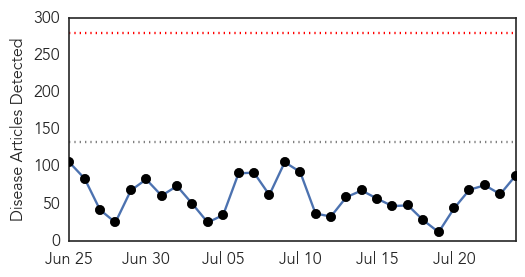
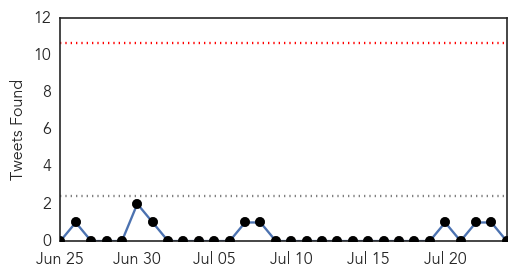
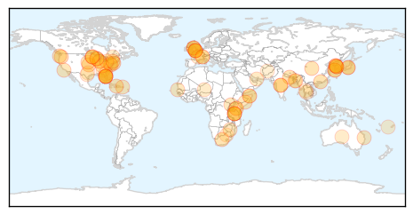
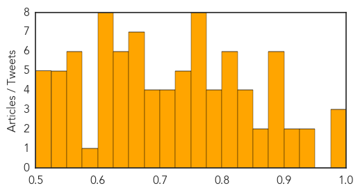

Mold/Fungal
30-Day Web Trend
2 alerts, 0 warnings

30-Day Twitter Trend
0 alerts, 0 warnings

Article Locations

X

Article Confidences

Top Articles:
Top Tweets:
-
No tweets found for Jul 24, 2015
Unknown
30-Day Web Trend
0 alerts, 0 warnings

30-Day Twitter Trend
0 alerts, 0 warnings

Article Locations

Article Confidences
Top Articles:
- 0.998
- Doctor's diary: should expats worry about the Mers outbreak?
- 0.992
- The World On Arirang
- 0.989
- (LEAD) S. Korea moves to declare 'de facto' end to MERS outbreak
- 0.949
- Spike in Armadillo-related Leprosy Cases Causes Scare in Florida
- 0.926
- Clark County boy infected in salmonella outbreak
- 0.917
- Chicago Tribune
- 0.917
- Chicago Tribune
- 0.895
- Itching And Using And Bumps, Oh My! HELPFUL INFORMATION To Vaginal Issues
- 0.889
- ‘Be really careful with raw meat ‘ Salmonella tied to pork sickens at least 56 in Washington
- 0.884
- MERS outbreak 'virtually' over here
- 0.879
- Seoul ready to declare end of MERS outbreak
- 0.879
- KEPR CBS 19 - News, Weather and Sports - Pasco, WA
- 0.878
- Rautahat Hospital sans doctor for week
- 0.866
- Dead calves source of cryptosporidiosis in veterinary medicine students — Philadelphia
- 0.861
- World’s first malaria vaccine by GlaxoSmithKline to be used for babies in Africa
- 0.849
- Authorities Warn Residents to Steer Clear of Armadillos over Leprosy Concerns
- 0.844
- Public Health announces 56 cases of malaria in recent weeks
- 0.835
- Outbreak Linked to Sushi, Frozen Tuna Contamination
- 0.830
- One dead, 9 affected with Japanese Encephalitis in Arunachal
- 0.819
- Armadillos Linked To Leprosy Cases In Florida
- 0.817
- Strategies to Save Yourself or a Loved One
- 0.817
- Malaria rears its ugly head in Puerto Rico
- 0.815
- Wyoming records first vesicular stomatitis case in a horse for 2015
- 0.808
- Transfer and promotion spree for doctors
- 0.802
- Salmonella illness outbreak appears to be linked to pork - More than 50 cases in eight Washington counties in 2015 so far
- 0.799
- Health partners in Somalia concerned about scaling down of life-saving health services due to funding shortages
- 0.799
- More women statewide passing syphilis to their newborns
- 0.779
- Horse dies from Hendra
- 0.778
- Finally, a viable vaccine for Malaria, but can only fight one strain
- 0.772
- A malaria vaccine nearly 30 years in the making just got a green light from EU regulators
- 0.765
- Tasty Prawns Prevent Blood Flukes
- 0.764
- Salmonella outbreak linked to sushi sickens 62, CDC reports
- 0.762
- Leprosy cases in Florida: Armadillos linked to increased cases of leprosy - health officials
- 0.759
- Hendra: Quarantine after horse dies from Hendra virus on Queensland property
- 0.759
- Malaria death toll in Northern Uganda hits 165 - Uganda
- 0.756
- One dead, 9 affected with Japanese Encephalitis in Arunachal
- 0.751
- First malaria vaccine gets green light
- 0.747
- UN health agency welcomes European regulators’ initial green light on malaria vaccine
- 0.743
- Promotional campaign aims to lure Chinese tourists back to S. Korea
- 0.737
- Wildlife Increases Foot and Mouth Spread Among Zimbabwean Cattle
- 0.737
- Jeju governor sees formal end to MERS outbreak around Aug. 2
- 0.734
- Salmonella Outbreak In 11 US States Linked To Sushi
- 0.722
- Armadillos Blamed For Spread of Leprosy In Florida
- 0.716
- Malaria main cause of 20% of child death in Kenya
- 0.711
- Tuna Used To Make Sushi May Have Caused Salmonella Outbreak In Several States
- 0.705
- Health partners in Somalia concerned about scaling down of life-saving health services due to funding shortages - Somalia
- 0.694
- Heat-related illnesses declines on awareness
- 0.693
- Jeju governor sees formal end to MERS outbreak around Aug. 2
- 0.687
- Kenya : Malaria vaccine gets regulatory nod
- 0.676
- Economic Impacts of Vesicular Stomatitis Outbreaks
Showing top 50 articles...
Top Tweets:
-
No tweets found for Jul 24, 2015